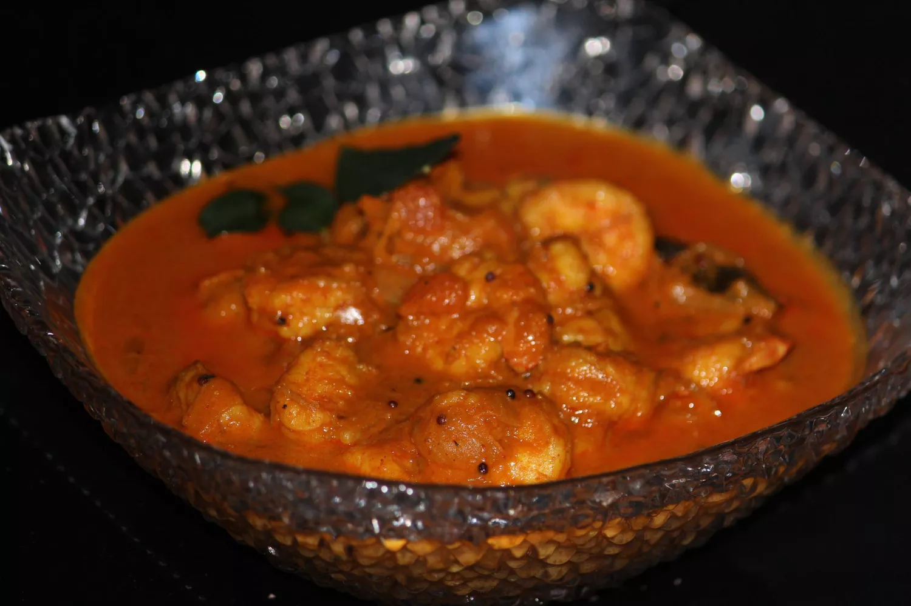

Home
Shrimp Curry

Description
Shrimp, also known as prawns in many parts of India, is a popular seafood that’s quick to cook and full of flavor. In
Indian cuisine, shrimp is often prepared as a spicy and aromatic curry. The shrimp are cleaned and cooked in a rich
gravy made with onions, tomatoes, garlic, and a mix of spices like turmeric, red chili, cumin, and garam masala. Coconut
milk or tamarind may also be added depending on the region — especially in coastal areas like Kerala or Goa.
Shrimp curry can be served with rice or chapati and is known for its bold, tangy, and slightly sweet flavor that
perfectly complements the delicate taste of shrimp.
Ingredients
- 2 tablespoons peanut oil
- ½ sweet onion, minced
- 2 cloves garlic, chopped
- 1 ½ teaspoons ground turmeric
- 1 teaspoon ground ginger
- 1 teaspoon ground cumin
- 1 teaspoon paprika
- ½ teaspoon red chili powder
- 1 (14.5 ounce) can chopped tomatoes
- 1 (14 ounce) can coconut milk
- 1 teaspoon salt
- 1 pound cooked and peeled shrimp
- 2 tablespoons chopped fresh cilantro
Steps:
- Gather all ingredients.
- Heat peanut oil in a large skillet over medium heat; cook and stir onion in hot oil until translucent, about 5 minutes.
Remove the skillet from heat and allow to cool slightly, about 2 minutes.
- Add garlic, turmeric, ginger, cumin, paprika, and chile powder to onion in the skillet; stir over low heat to bloom
spices, about 30 seconds. Stir in tomatoes, coconut milk, and salt. Bring to a boil for 1 minute, then reduce heat and
simmer, stirring occasionally, for 10 minutes.
- Stir in shrimp and cilantro; simmer until shrimp is warmed through, about 1 minute.
- Serve and enjoy!